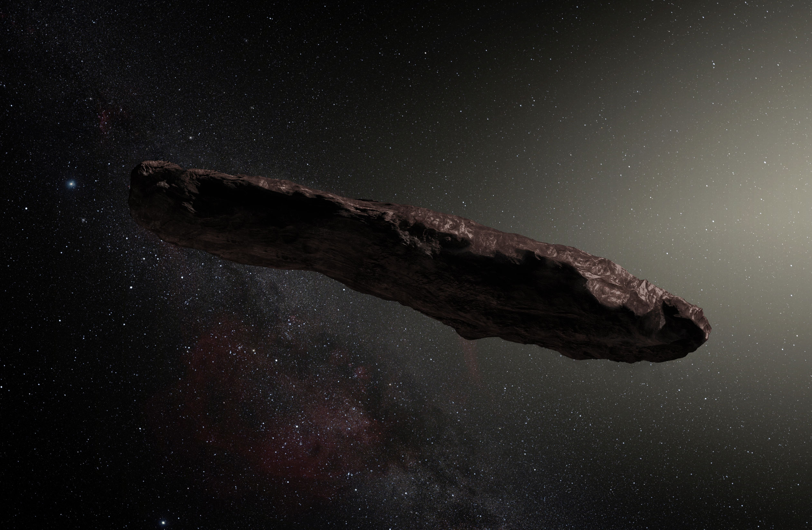

By Original: ESO/M. KornmesserDerivative: <a href="https://en.wikipedia.org/wiki/User:Nagualdesign" class="extiw" title="w:User:Nagualdesign">nagualdesign</a> - Derivative of <a rel="nofollow" class="external free" href="http://www.eso.org/public/images/eso1737a/">http://www.eso.org/public/images/eso1737a/</a>, shortened (65%) and reddened and darkened, CC BY-SA 4.0, Link